| 日付 | 2013年12月29日（日） - 2013年12月31日（火） |
|---|---|
| メンバー | 家族（妻、長女・2歳、長男・0歳） |
| アクセス | 車、船 |
今年の年末は1年半ぶりに家族全員で帰省する。
帰省ラッシュの中、神奈川から奈良まで一気に移動するのは大変だし、
せっかく長距離の移動をするのだから、
移動ついでに観光をしながら2泊3日で奈良に向かうことにする。
1日目
初日は静岡の観光を行う。まずは風光明媚なことで有名な三保の松原へ。
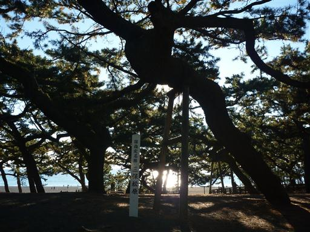
羽衣の松。近くにある「御穂神社」の御神体だ。
先代の松が立ち枯れたため2010年に世代交代した、三代目の羽衣の松だ。
付近は立派な松が多いが、確かにこの松は特に立派で形が美しい。
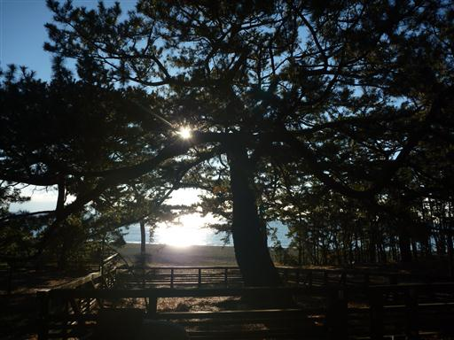
海岸に出てみる。目の前に広がるのは真っ青な駿河湾だ。
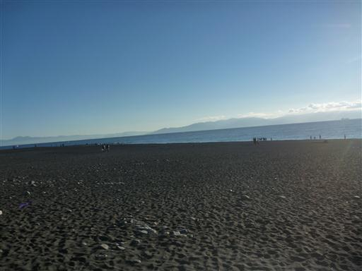
そして松原の向こうには見事な富士の姿が見える。
富士山が世界遺産に登録された際に、三保の松原は富士山から遠すぎるという理由で
除外されそうになっていたが、最終的には無事、構成資産に含まれた。
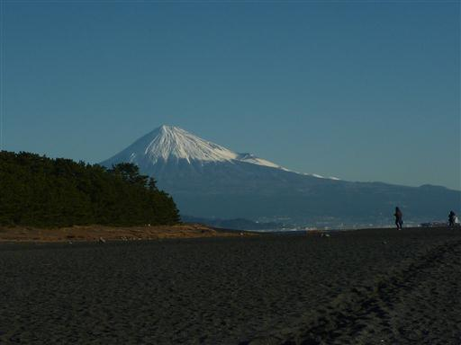
松原の中には遊歩道が整備されている。
砂浜は歩きにくいので、遊歩道を少し歩いてみる。
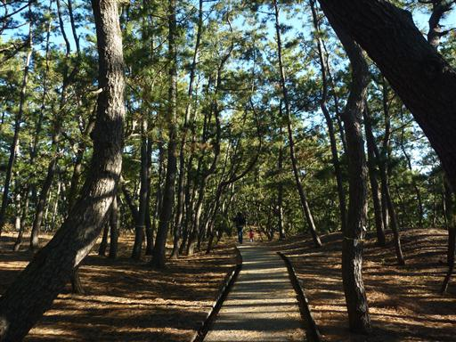
しばらく歩くと舗装された道路に出てくる。
道はこの先まだまだ続いているが、この辺りで引き返すことにする。
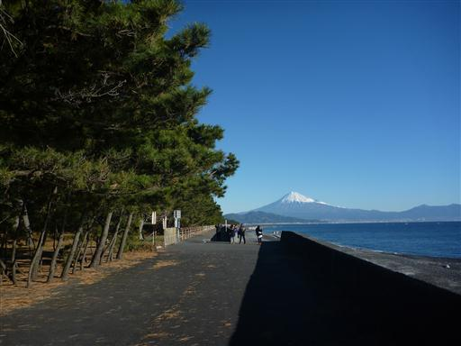
羽衣の松から内陸に向かって「神の道」と呼ばれる道が御穂神社まで伸びている。
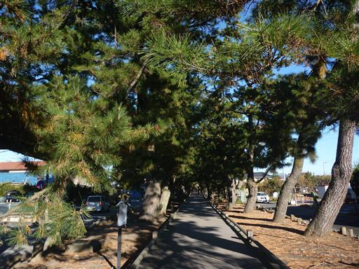
木の幹が道の方に覆いかぶさっている場所は、頭をぶつけないように小さな柵が設けられている。
その分、右側に道が膨らんでいるのが面白い。
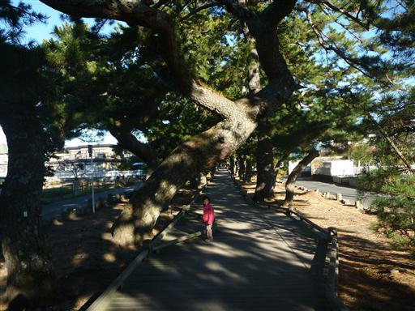
神の道をしばらく歩くと鳥居が現れる。車道を渡って鳥居を潜る。
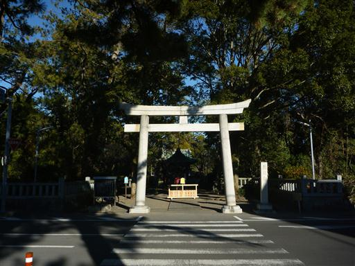
御穂神社。正月を控えて多くの方が作業をしていて、あまり参拝をするという雰囲気ではない。
足早に参拝して、そそくさと立ち去る。
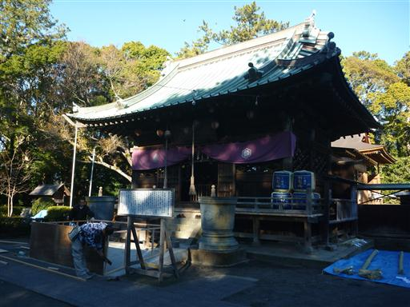
三保の松原観光の後は昼食をとろうと考えていたが、まだ時間が早いため
エスパルスドリームプラザにある観覧車に乗ってみることにする。
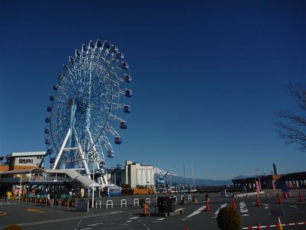
時刻はちょうど10時で観覧車のオープンの時間だ。本日の最初の客となる。
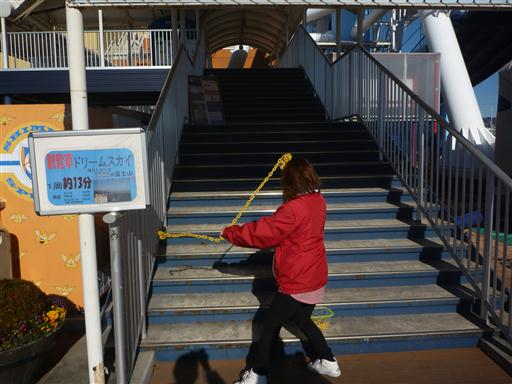
観覧車に乗車。大人一人500円と比較的リーズナブルだ。
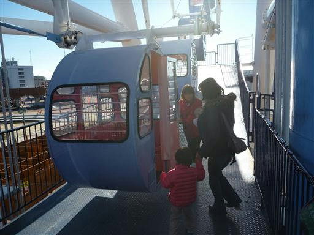
眼下に広がるのは清水の街並み。それなりの都市だ。

こちらは清水港と富士山。富士山がきれいに見えるのがこの観覧車の何よりの魅力だろう。
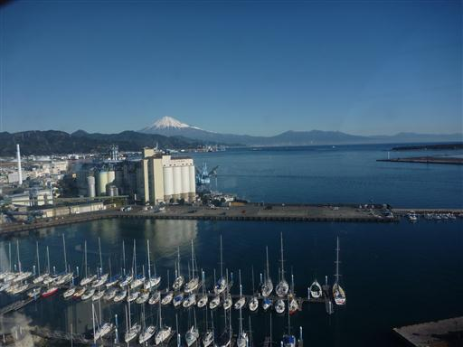
眼下に見える水は、港なのに驚くほど美しい。美港として有名なだけのことはある。
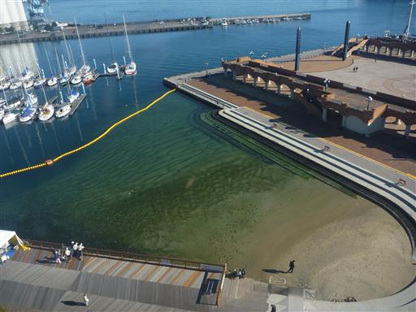
1周13分の観覧車を降りた後は、観覧車から見えた小さな砂浜に下りてみる。
娘は砂浜にある石や貝殻を拾って投げている。
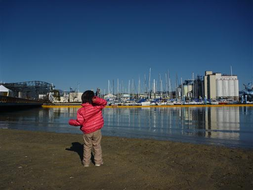
11時の昼食タイムが近づいて来たので、清水港の側にある河岸の市に移動する。
魚市場や飲食店が並んでいて、ものすごい人出だ。
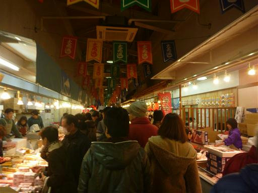
河岸の市の人気店「おがわ」で昼食をとる。行列ができていて30分待ちだった。
「しみずみなと 刺身定食」を頼んだのだが、凄まじいボリュームの刺身が出てくる。
一切れ一切れが一人前くらいのサイズであり、1年分のマグロを食べたという感じだ。
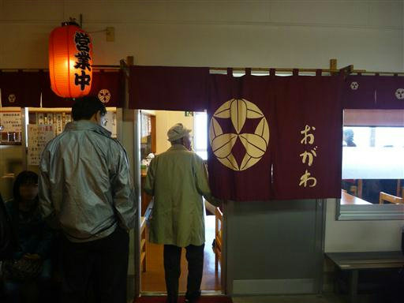
お腹がいっぱいになったら、次なる目的地・日本平に向かう。
ここも静岡を代表する観光地だ。
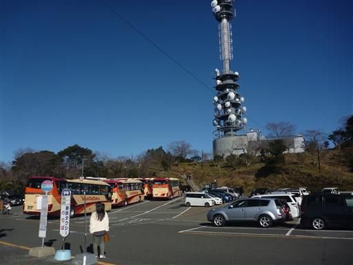
目の前に広がるのは真っ青な駿河湾、手前に見える山は久能山だ。
久能山まではここからロープウェイが通じている。

早速ロープウェイに乗って久能山に向かう。
高度をかせぐロープウェイではないので、往復1000円は少々高く感じる。
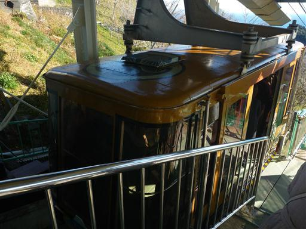
標高300m程度の丘陵地なのだが、この辺りはかなり急峻な地形になっている。
切り立った崖と深い谷が広がっていて、ロープウェイはその谷に架かっている。
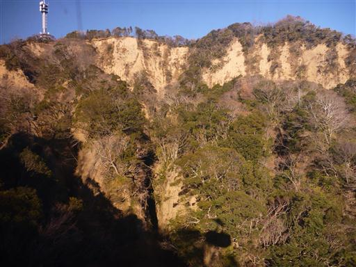
左手に久能山が見えてくる。周りを崖に囲まれている。
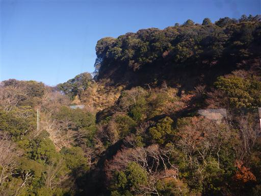
ロープウェイ久能山駅に到着。海岸線にたくさんのビニールハウスが見える。
この辺りはイチゴの栽培が盛んだ。
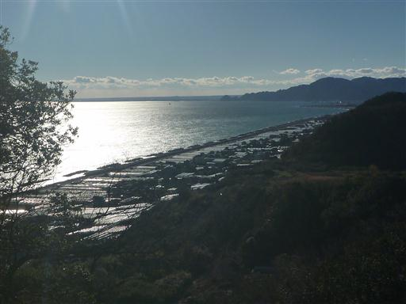
久能山東照宮を参拝する。
日本平からここまでの道は通じていないためロープウェイを使う必要があるが、
下からここまで1159段の石段が続いているらしい。
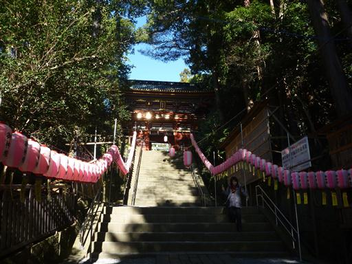
立派な楼門を潜る。
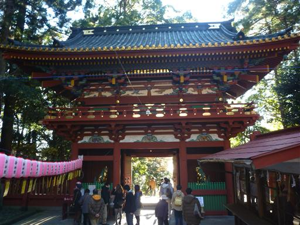
楼門の狛犬は金色に光っている。
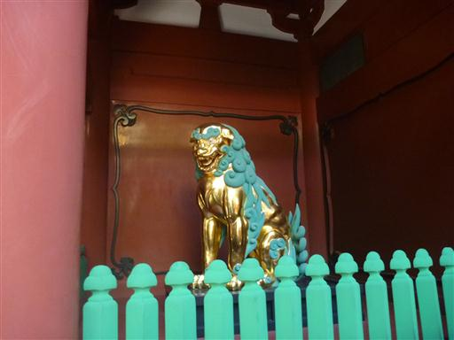
拝殿。国宝に指定されている。
東照宮とは徳川家康を祀る神社であり、久能山東照宮は日光東照宮に次ぐ知名度を持つ。
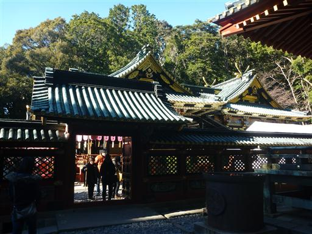
拝殿の内部。日光東照宮と同様、絢爛豪華な装飾が施されている。
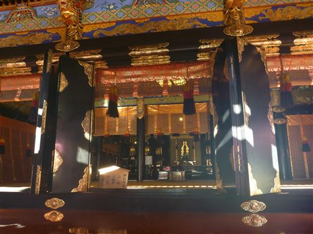
大蘇鉄。樹齢650年と記載されているので、徳川家康が産まれる前から存在していたことになる。
東照宮を建立する前は、ここに久能寺が存在したらしい。
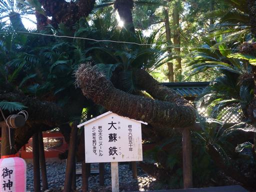
バンダイのプラモデルが奉納されている。
確かにバンダイは静岡に工場を持っているが、少々場違いな感じだ。
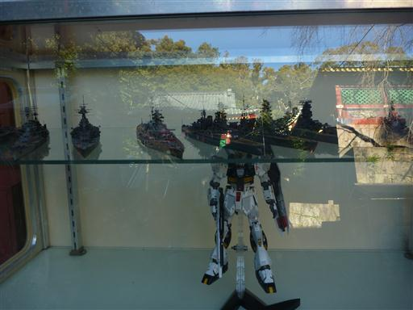
大きな石段を登っていく。石段の一段一段が非常に大きい。
一時期ここに城が築かれていたため、その名残だ。
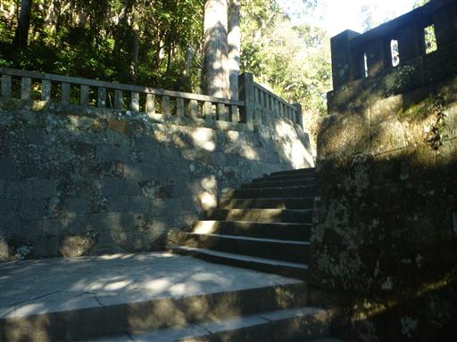
最奥部に家康の神廟がある。家康の遺言によりここに葬られている。
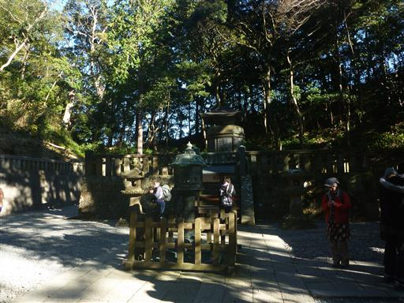
再びロープウェイに乗って日本平に戻ったら、展望台に行ってみることにする。
ここからも美しい富士の姿が望める。
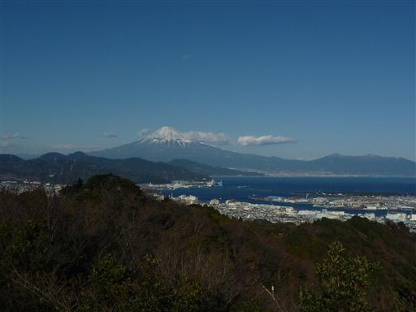
眼下には清水港と三保半島が見える。
半島奥の緑色の部分が三保の松原だ。
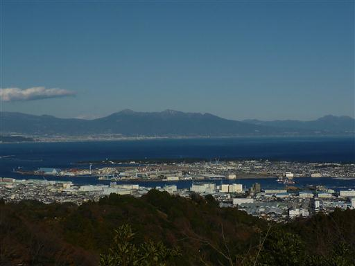
北方には静岡の山々が広がっている。右手に見える双耳峰は竜爪山、
左手奥に見える高峰は大無間山のようだ。
こんな場所から大無間山が望めるとは思わなかった。
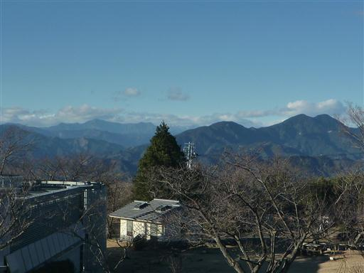
本日の宿であるビジネスホテル「ホテルエックシズオカ」に車を停め、食事に向かう。
訪れた店は「味の店 乃だや」。静岡名物の静岡おでんを食べる。
個人経営の居酒屋なので、子連れだと少々入りにくい雰囲気だが、
17～18時でさっと食事を済ませ、混雑する前に店を出る。
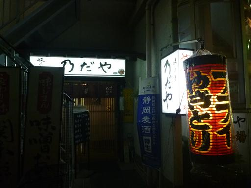
辺りは電飾がきれいだ。
静岡駅前で明日の昼食用のパンを買ってからホテルに戻る。
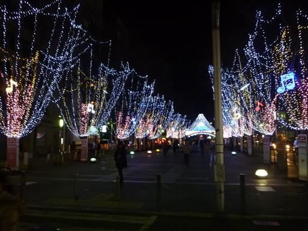